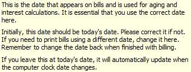
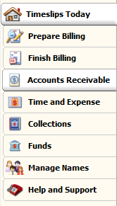
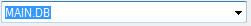
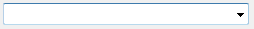
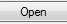
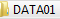
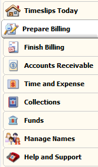
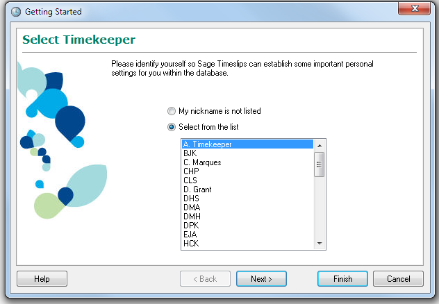
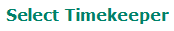
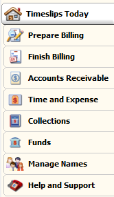

from sikuli import* def open_ts(): App.open("C:\TSSHARE\Timeslips 2014\Timeslip.exe") wait() type(Key.ENTER) wait() type("f", KeyModifier.ALT) wait(1) type("o") wait(2) find() type("a", KeyModifier.CTRL) type(Key.BACKSPACE) paste(, 'c:\\tsshare\\timeslips 2014\Original System DB 2013') click() doubleClick(Pattern().similar(0.84)) doubleClick(Pattern().similar(0.81)) waitVanish() click() wheel(WHEEL_DOWN, 7) click(Pattern().similar(0.97)) click() waitVanish() wait()